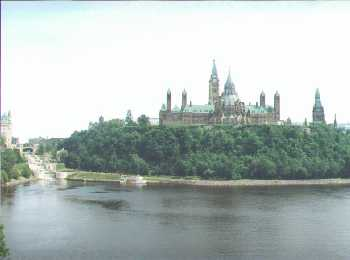

Canada
14th - 28th June 2001
I hope you enjoy the highlights of Gemma's and my trip to Ontario, Canada, as much as
I enjoyed the holiday:
|
Gemma and her Mountie Moose friend This is the only mountie we saw during the whole trip! I was expecting to see Benton Frazer and Diefenbaker but I was sadly disappointed. Ah well, a good excuse to go back then! |
On top of the world... literally! Proof that we made it to the top of the world's tallest free standing structure, the CN Tower in Toronto. |
View from the Top The breathtaking view across Toronto from the Skypod at the top of the CN Tower. Unfortunately, because it was so hot (!), it was rather hazy that day, but I think we could see plenty far enough! |
|
The Parliament Buildings This is the Canadian equivalent of Big Ben and the Houses of Parliament (but unfortunately the London backdrop is rarely as blue as that!) |
Parliament Hill  A view of the Parliament buildings from the Hull (Quebec) side of the river. To the left of the picture is the series of stepped locks that bring the Rideau canal down to meet the Ottawa River. |
Don't we look gorgeous! Having had a barbecue at Mike's, we are now ready to go out and run riot on the streets of Ottawa, showing the Canadians that the English sure know how to party. Gracy's, here we come! |
|
Blue Penguins One of those things you have to do at Niagara Falls - the Maid of the Mist trip, complete with blue penguin suits! In the background you can see the spray from the american part of the falls. |
Niagara Falls The breathtaking horseshoe falls are the Canadian part of the Niagara Falls. And breathtaking they were. The force of the water, the volume of water and the noise are ingrained on my memory forever! |
Montreal A view of Montreal from the harbour-side. Can you see the twin towers of the Notre Dame cathedral, now hidden amongst the many modern skyscrapers? |
|
Bus driver thinks he's Schumacher Imagine the look of surprise when we saw a bus driving round the Circuit Gilles Villeneuve! |
Pole Position "And it's Gemma in pole position, followed by Heather alongside in second place, with Mike ready to pounce from third on the grid!" |
How did Gemma get to be in 1st?! I was just rehearsing for when I am here for real in a few years' time (except then I'll be on the top spot, of course...) |
|
Quebec City Looking down on the beautiful quaint Quebec City from the ramparts of the Citadelle (old military barracks) |
"It's oh so quiet.... shhh! shhh!" Would you believe that just round that bend, a few miles downriver, is the bustling capital city of Ottawa? No. me neither. Wow. |
Where is everybody?! Lake La Peche, one of the larger lakes in the Gatineau National Park. Would you believe that this is only a few miles north of Hull? The silence is only disturbed by the occasional cry of a Loony, the purr of the park warden in his motorboat, or the yelps of a Caroline as she is nipped yet again by one of the many tiddlers that occupy the lake! |
|
It's just round the next corner... honest! Our hunt for a landing spot was finally successful, so we moored up and enjoyed a nice glass of wine before continuing round the lake to our rock for lunch and a swim. |
Mike and his housemates Mike, doodah and whatsit (sorry, can't remember their names! No, I'd only had a few bottles by then...) |
Our wonderful hostess and her man friend Mike and Heather, our chauffeurs and tourguides for the two weeks we were there. Thanks very much guys for an unforgettable holiday! |